Close Shave
2026
Publication
29.7x42 cm
A publication documenting a material research into shaving cream. Starting with experiments using shaving cream as a tool to add texture on top of imagery, reflection on the process spiraled into larger themes. Through self-portraits, writing, and theoretical research, the project tackles the gendered history of shaving, psychoanalytical theory of the skin as a mental and physical barrier, as well as my own anecdotal relation and experience with the material.
The project is rooted in an intuitive approach to image making as a method.


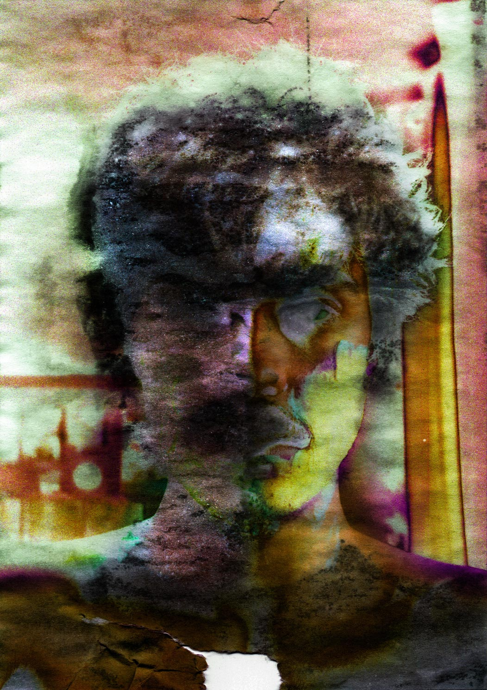
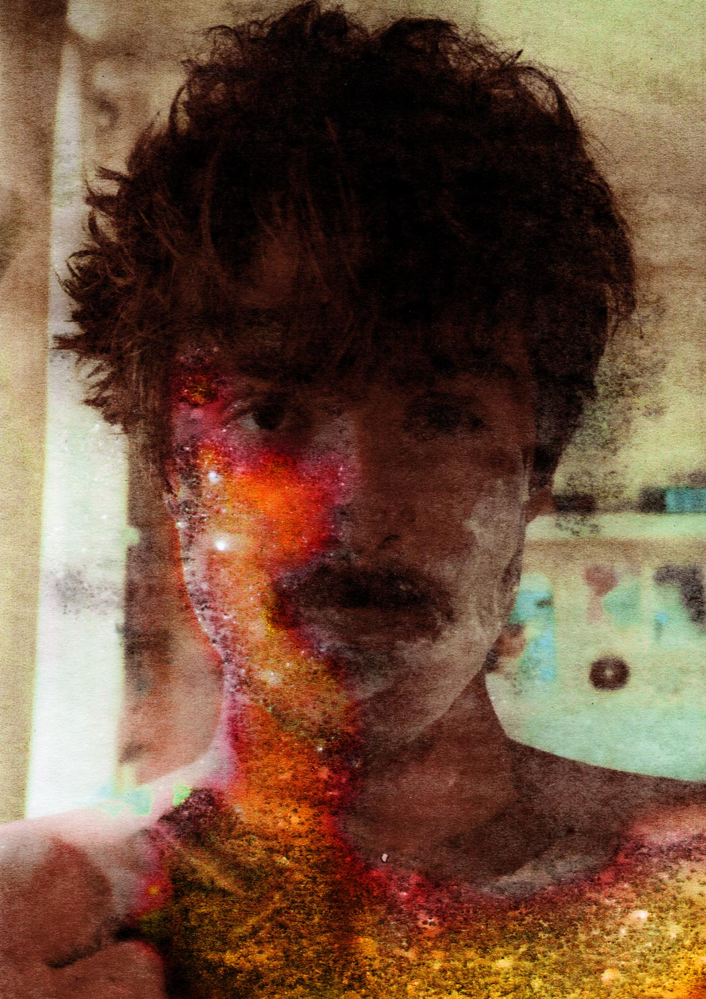
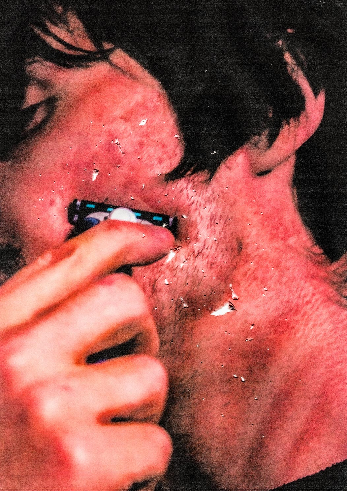
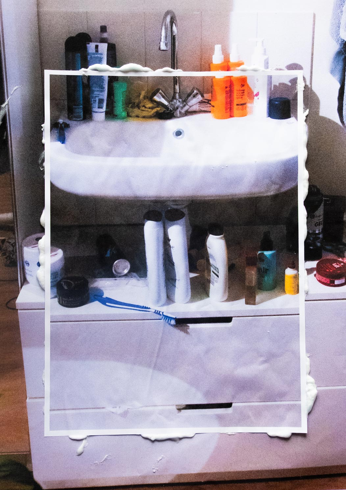
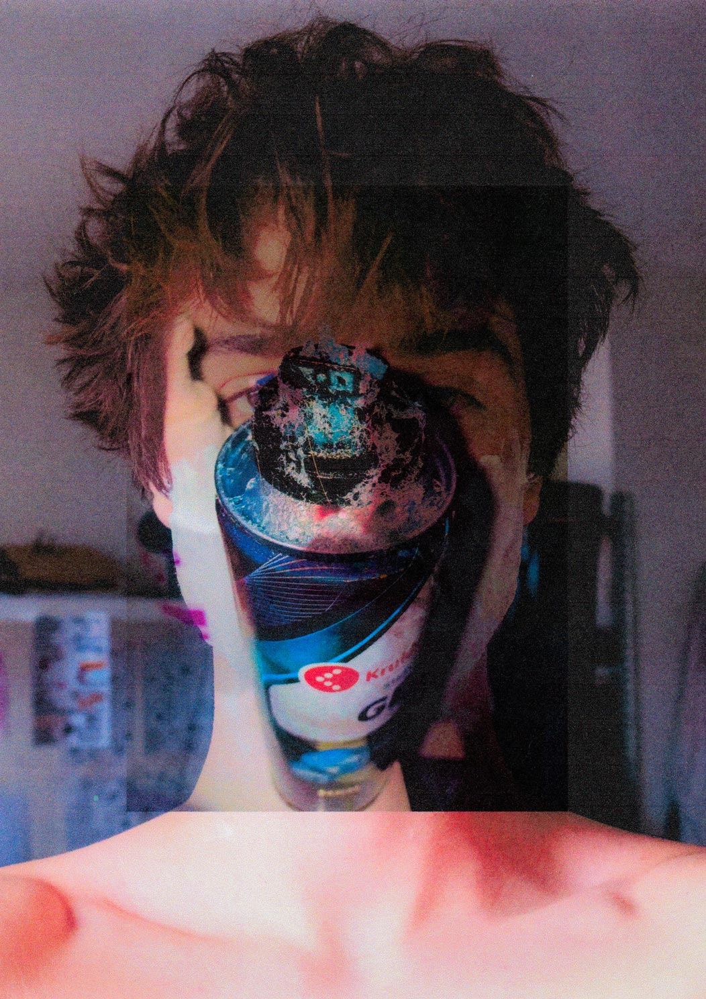
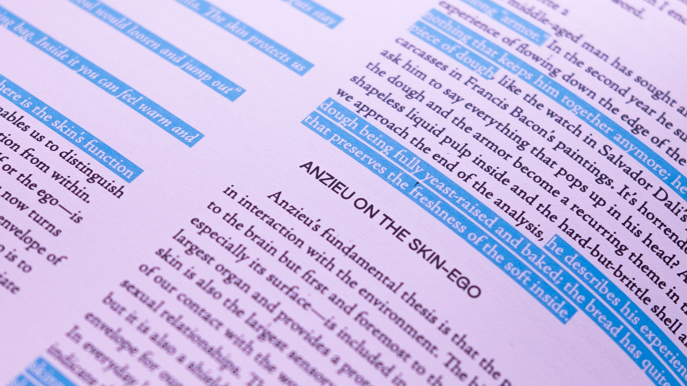
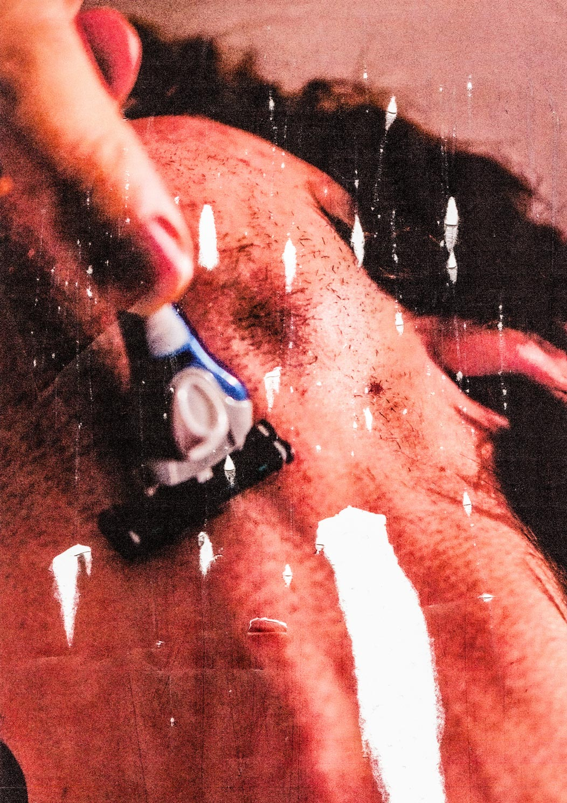
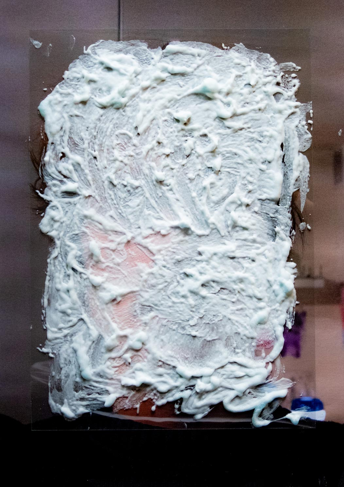
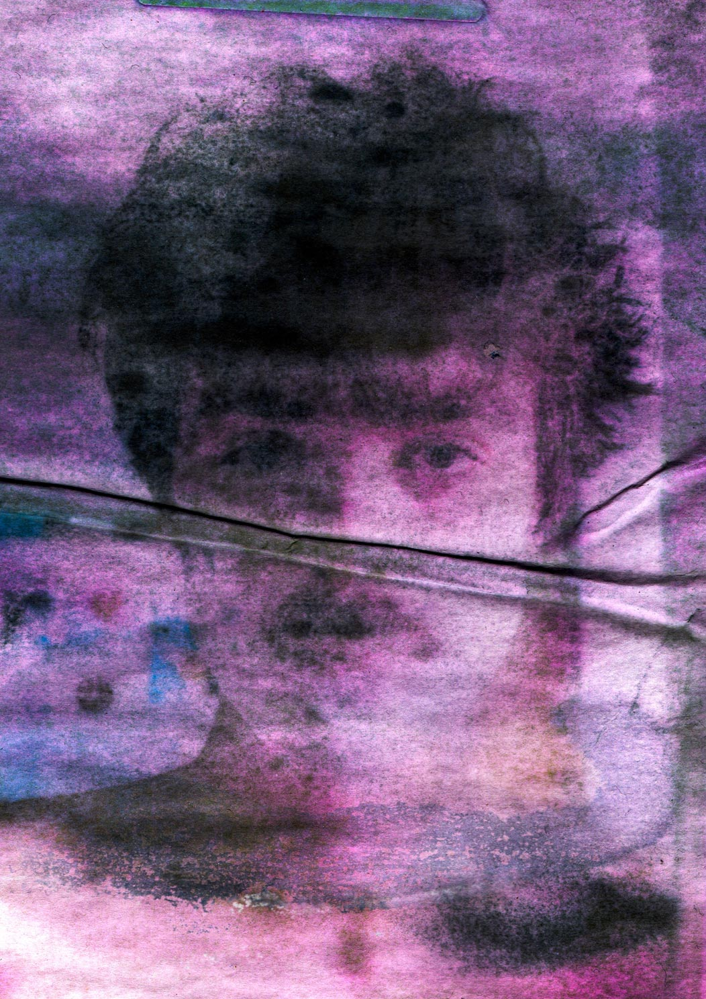
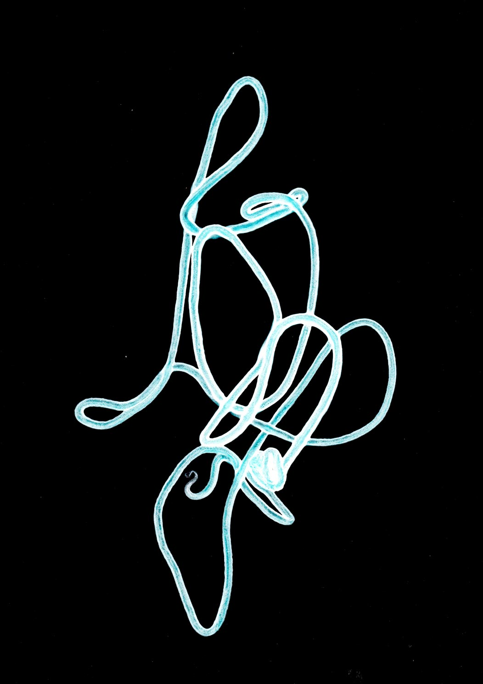
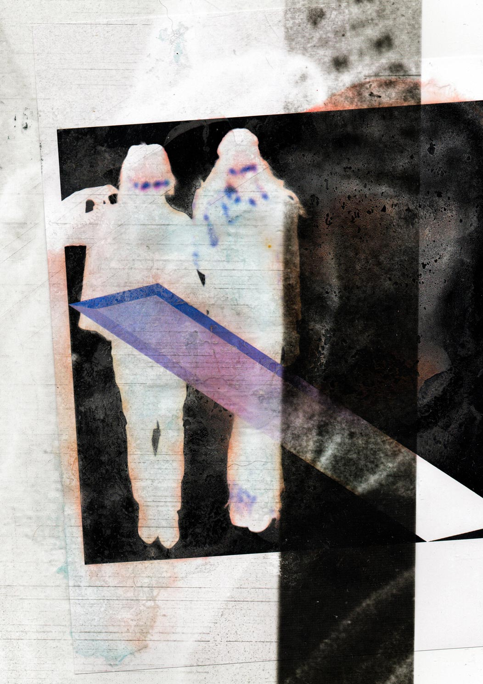
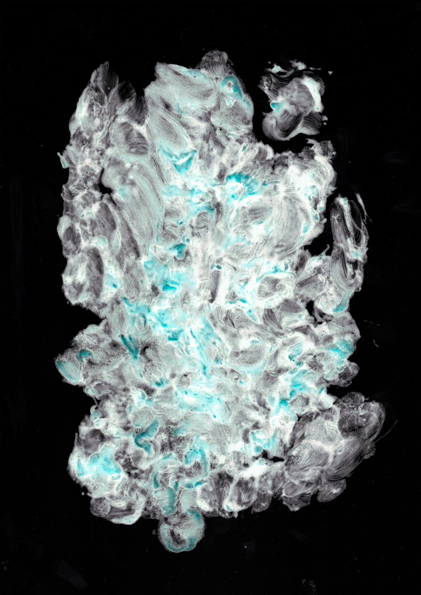
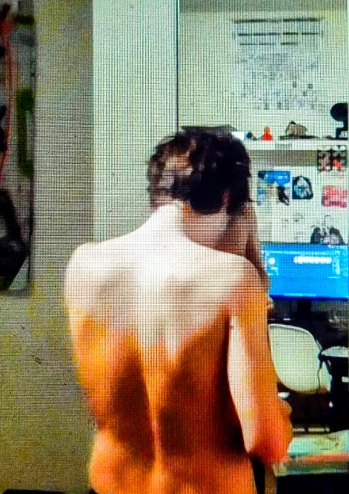